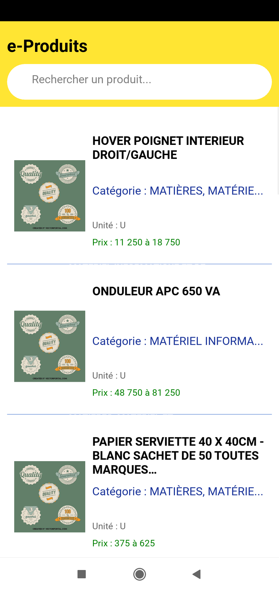
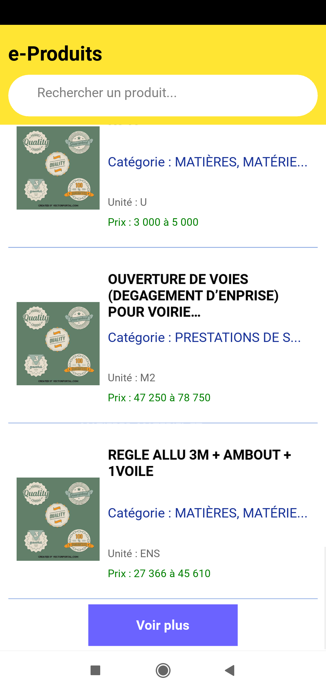
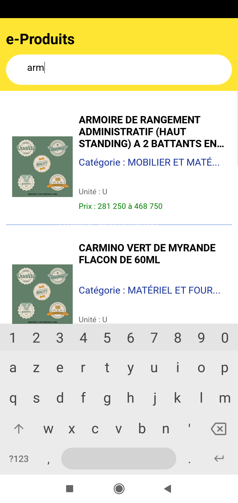

Développeur Python & Django
Ma force réside dans la dualité de mon profil : la rigueur de l'audit comptable alliée à la puissance de l'automatisation informatique. Je ne me contente pas de coder des outils, je conçois des solutions conformes aux exigences financières et fiscales.
Application web complète permettant aux utilisateurs de générer des CV professionnels au format PDF via un formulaire dynamique. Ce projet démontre ma capacité à gérer des flux de données complexes et à produire des documents officiels exportables.
Visiter le siteDéveloppement d'une application android avec Kivy, permettant d'afficher, d'analyser et de gérer les données du répertoire des prix du Bénin via une interface intuitive et responsive..



Scripts avancés de récupération de données sur des plateformes internationales. Capacité à contourner les protections (Cloudflare) pour extraire et structurer des informations critiques sous format Excel/Word.
GitHub ScrapingOutil de gestion de workflow : attribution de tâches, suivi de progression, relecture et validation. Une architecture similaire à celle requise pour un suivi de devis et de validation client.
Voir sur GitHub